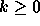
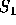
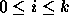

| Approximate Matches |
Given a non-null string of text S, a non-null string of text P, and an integer  , find all non-null substrings of S that match or ``approximately match" P with at most k mismatches. The substring  is considered to match the string P if they are identical (as you might expect), and approximately match if the strings differ by no more than k mismatches, as defined next.
If a minimum of m characters have to be removed from to make it identical to P, then approximately matches P with m mismatches. If a minimum of n characters have to be removed from P to make it identical to , then approximately matches P with n mismatches. If m characters have to be removed from and n characters have to be removed from P to make and P identical, then approximately matches P with m+n mismatches (here m+n should be minimized).
Consider the string S =``The sky is blue".
As another example, the string ``scrapple" approximately matches the string ``apples" with four mismatches (by removing s, c, r from ``scrapple" and s from ``apples"). Although there are other ways to remove letters from these two strings to make the results identical (for example removing all but the s from both strings), four characters is the minimum number that can be removed.
Note that case is important in this problem; thus T does not match t, but T approximately matches t with two mismatches.
Each data set consists of three lines that contain k, S, and P, respectively. k is an integer; S is a string of length between 1 and 50 inclusive, and P is a string of length between 1 and 20 inclusive. Your program must stop processing data when it encounters a negative value for k
For each match with i mismatches (  ), your program must generate a line of one of the following forms (whichever is appropriate):
Q matches P
Q matches P with 1 mismatch
Q matches P with i mismatches
where Q is a substring of S that matches P or that approximately matches P with i mismatches. If more than one substring in S matches or approximately matches P, they must be printed in the order they appear in S (from left to right). Substrings that start at the same position must be listed in the order of their size (shortest to longest). No value for Q may be listed more than once. If there is no match, no output should be generated. Leave a blank line after the output for each data set (even if there is no output for the data set).
1 He did not care about the carpet in the car. car 2 ABC BC -1
car matches car with 1 mismatch ca matches car with 1 mismatch car matches car care matches car with 1 mismatch ar matches car with 1 mismatch carp matches car with 1 mismatch car. matches car with 1 mismatch AB matches BC with 2 mismatches ABC matches BC with 1 mismatch B matches BC with 1 mismatch BC matches BC C matches BC with 1 mismatch